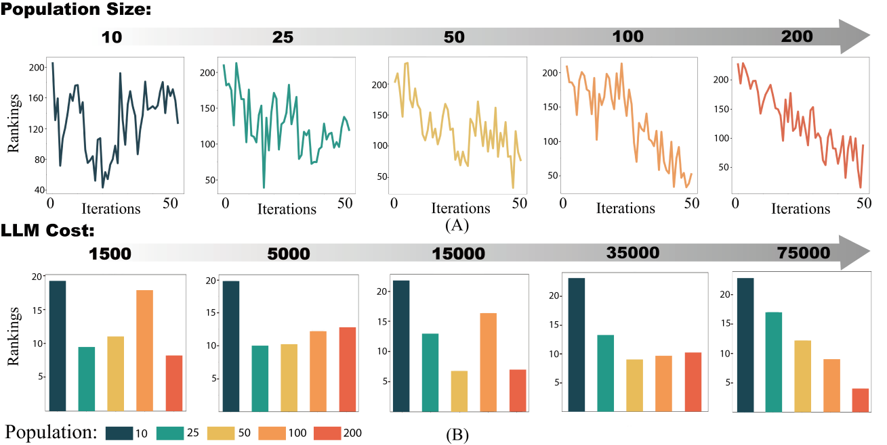

Direct Volume Rendering (DVR) is a fundamental technique for visualizing volumetric data, with transfer functions (TFs) playing a crucial role in extracting meaningful visual representations. However, designing effective TFs remains unintuitive due to the semantic gap between users' visual intent and the low-level parameters. Recent approaches leveraging vision-language models have shown promise while still facing a fundamental trilemma involving interaction intuitiveness, computational efficiency, and generalizability. This paper introduces a novel framework that addresses these challenges through three key innovations: (1) an intuitive multimodal interaction paradigm enabling users to express design goals using both natural and visual language, (2) a hybrid system integrating human prior knowledge with visual feedback for automated exploration of the TF space, and (3) a formalized volume rendering quality assessment framework based on vision-language models to provide optimal and generalizable visual feedback. The proposed system empowers both novices and experts to explore and customize volume visualizations efficiently. We validate our approach through comprehensive experiments and a detailed case study.
Analysis of evolutionary algorithm parameters on transfer function optimization. (A) Average rankings over iterations for different population sizes (10-200), showing that larger populations achieve more stable improvements with continued iterations while smaller populations show early rapid gains but unstable convergence. (B) Comparison of optimization effectiveness across different computational budgets (measured by LLM API calls), demonstrating that medium-small populations (25-50) perform better under limited resources, while larger populations (100-200) achieve superior results when computational resources are abundant.
Examples of transfer functions designed using our approach. The first row showcases cases where design intent is expressed through text. Users input text descriptions and our approach automatically designs transfer functions to achieve high-quality volume rendering results corresponding to these descriptions. The second row demonstrates cases where design intent is conveyed through images. When users cannot clearly articulate their ideas verbally, they can directly provide reference images to express their intent in visual form. In each example of the second row, the small image in the bottom right corner represents the user intent in the form of a reference image. Reference images for (A) and (B) are from other works, (C) uses the rendered image from the third example in the first row, and (D) utilizes Vincent van Gogh's "The Starry Night."
@Article{kerbl3Dgaussians,
author = {Kerbl, Bernhard and Kopanas, Georgios and Leimk{\"u}hler, Thomas and Drettakis, George},
title = {3D Gaussian Splatting for Real-Time Radiance Field Rendering},
journal = {ACM Transactions on Graphics},
number = {4},
volume = {42},
month = {July},
year = {2023},
url = {https://repo-sam.inria.fr/fungraph/3d-gaussian-splatting/}
}